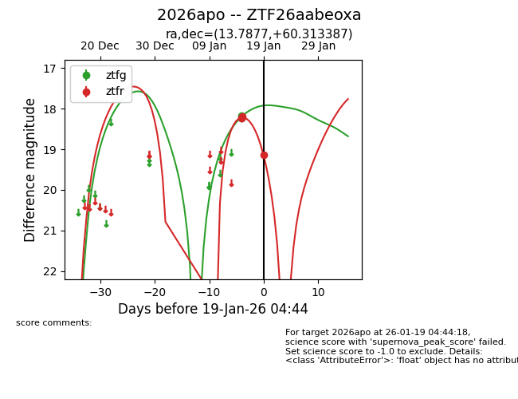
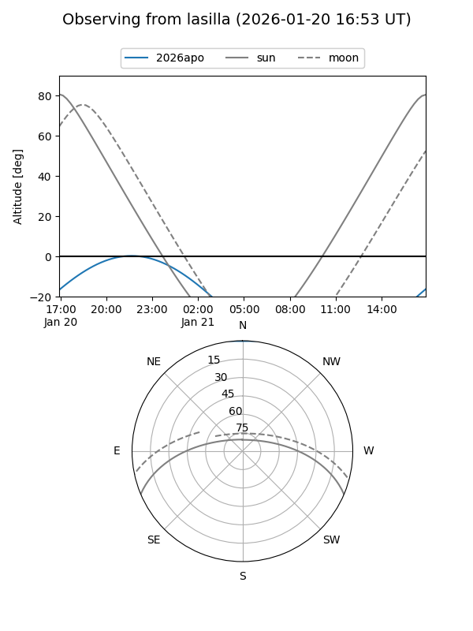
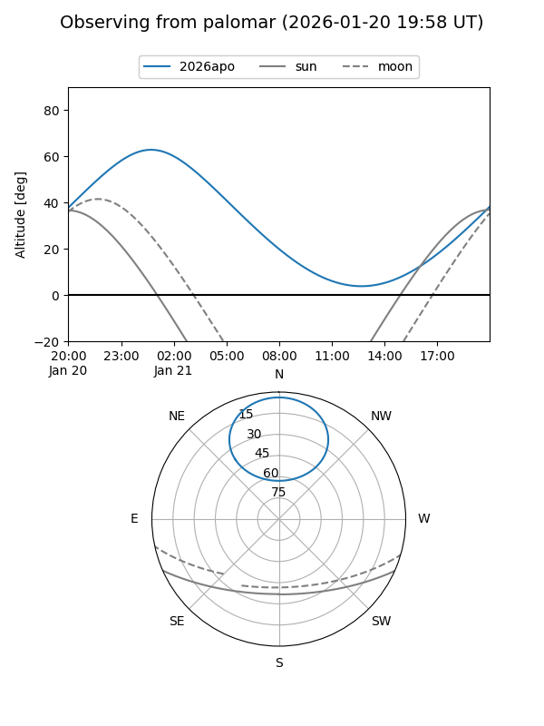
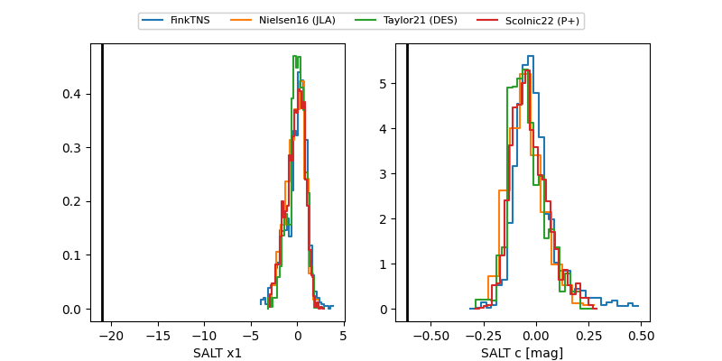

2026apo
Target 2026apo at 2026-01-19 04:45
Aliases and brokers:
FINK: link
Lasair: link
ALeRCE: link
TNS: link
YSE: link
alt names
ZTF26aabeoxa (ztf,fink_ztf)
2026apo (tns,yse)
Coordinates:
equatorial (ra, dec) = 13.7877,+60.31339
equatorial (HMS+DMS) = 00:55:09.04,+60:18:48.19
galactic (l, b) = (123.3921,-2.55504)
Flags:
Photometry:
last ztfg=18.16, ztfr=19.14
2 ztfg, 3 ztfr detections
Lightcurve

Visibility


Additional plots
